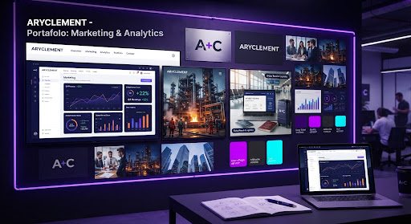

FINTECH & CORPORATIVO
schedule
1 año 5 meses de gestión
Community Management & Contenidos: Grupo Italcambio, Italviajes & Metalor
Rol: Community Manager & Estratega de RedesGestión integral de 3 cuentas de redes sociales simultáneas para marcas líderes de servicios financieros, viajes de negocios y metalurgia de alta precisión. Creación de contenido especializado, redacción publicitaria adaptada minuciosamente a la voz corporativa, monitoreo continuo de métricas de interacción activa y atención ágil de consultas comerciales.
trending_up
+35% Interacción Orgánica
Alineación directa con objetivos del departamento de ventas
Crecimiento Continuo
Meta Business Suite
Copywriting Estratégico
Monitoreo de KPIs
Planificación Editorial
Social Telemetry Engine
hub
Engagement Multi-cuenta
+35.4% YoY

3 Marcas Simultáneas • Italcambio / Italviajes / Metalor
Voz de Marca: 100% Homologada
SLA de Respuesta < 25m